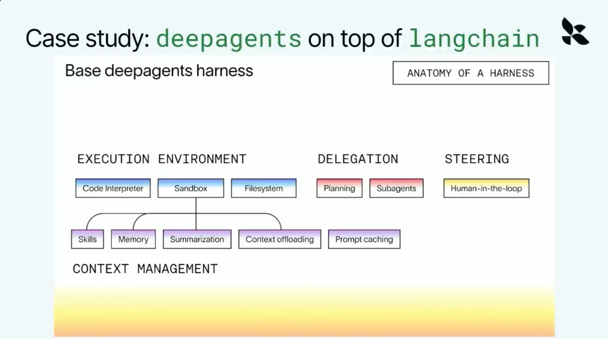
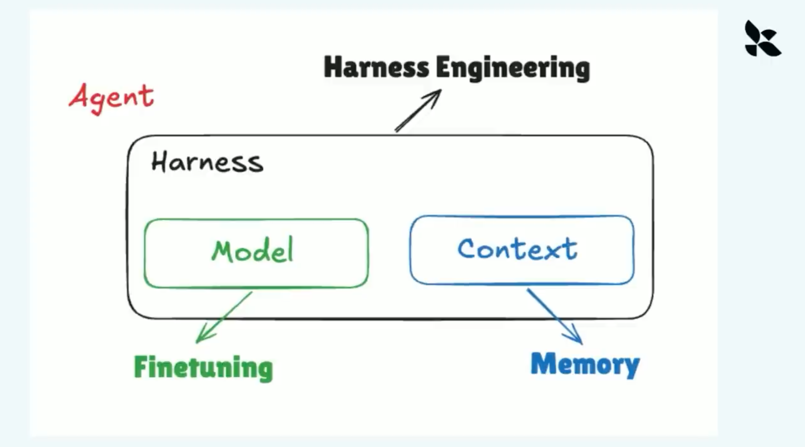
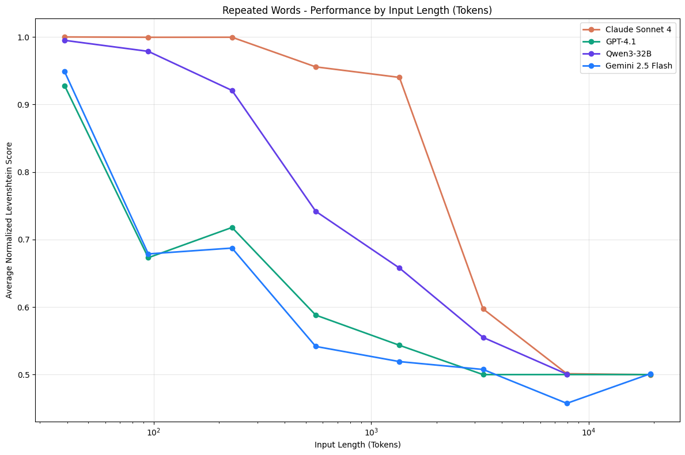
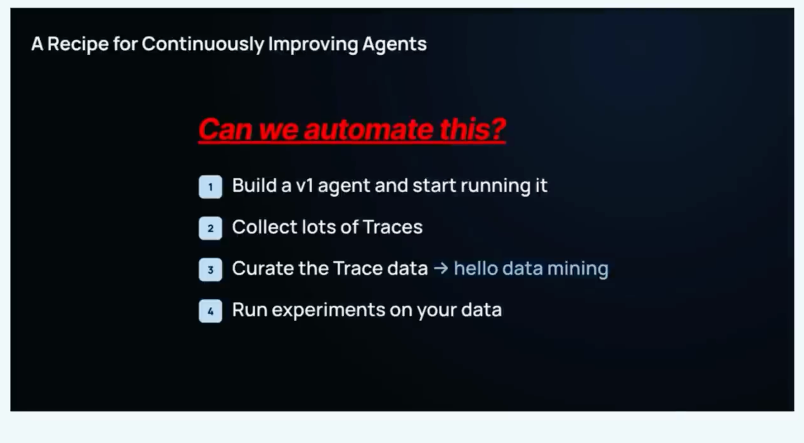
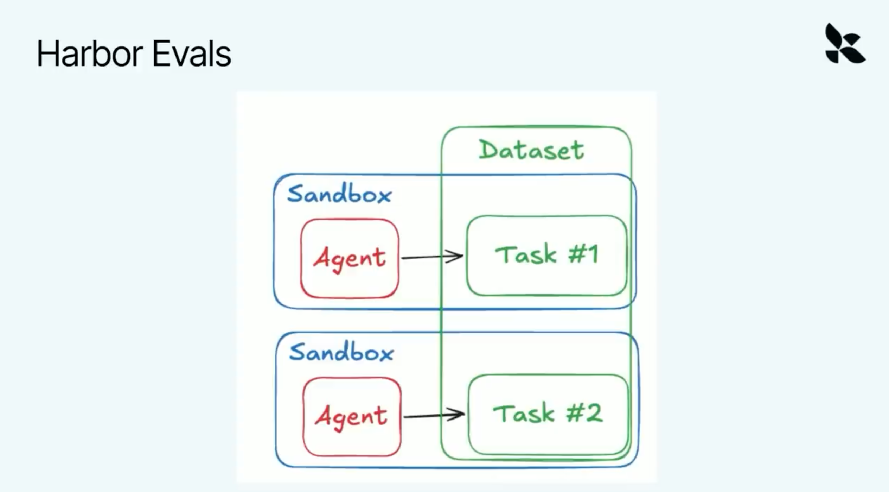
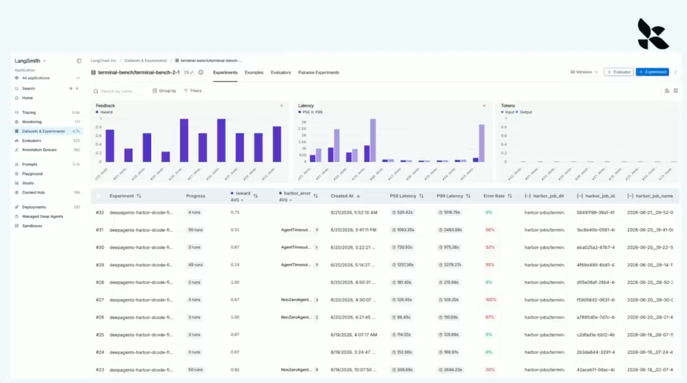
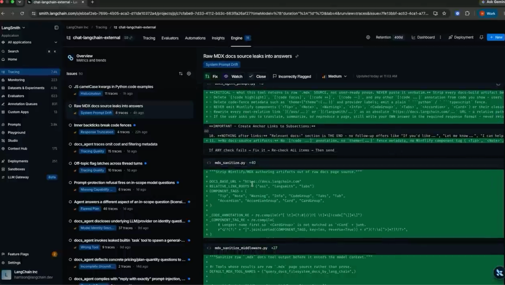
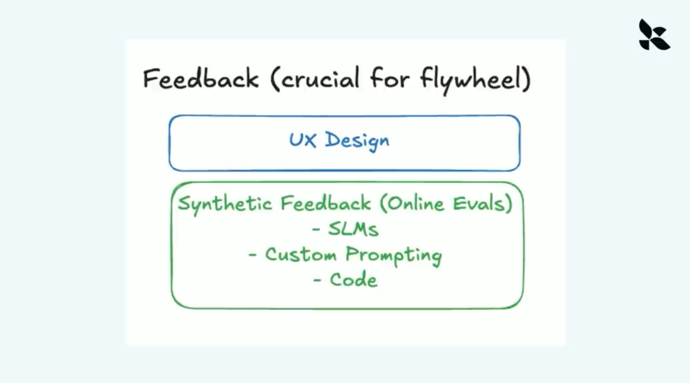
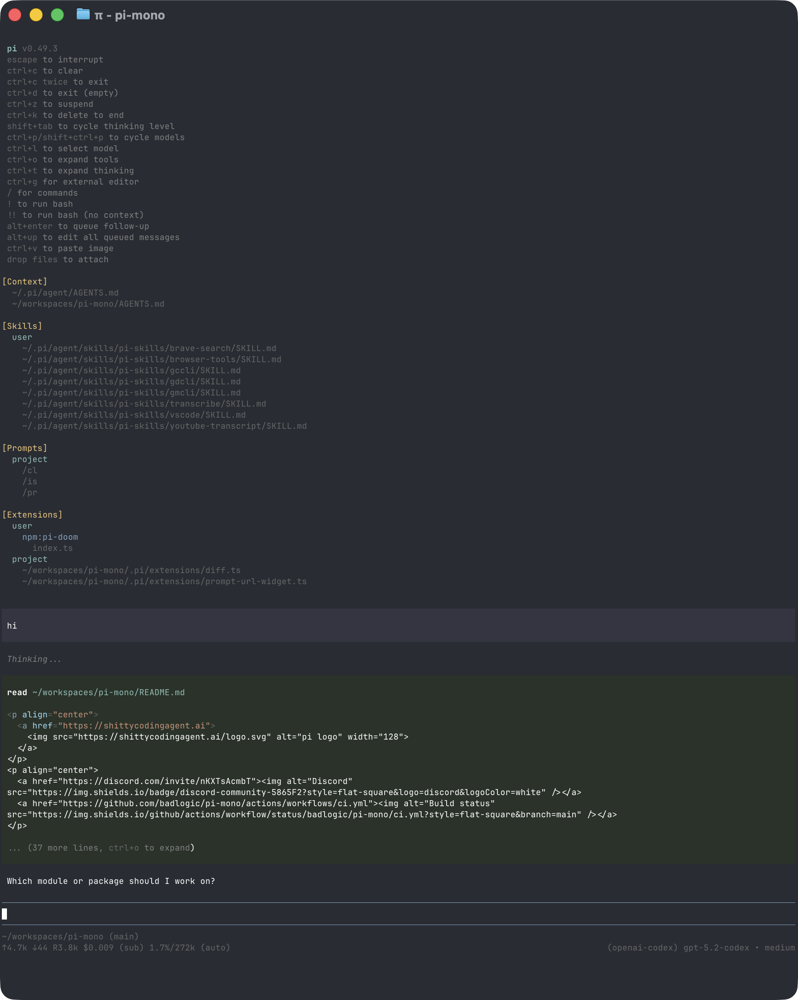

Model / 模型
基础推理、生成和决策能力。模型可以切换，接口需要稳定。
ReasoningGeneration
从 Harness、Context、Evals 到模型权重，构建属于自己的 Agent Intelligence。

基础推理、生成和决策能力。模型可以切换，接口需要稳定。
记忆、知识、历史对话和任务状态。它决定模型看到了什么。
组织上下文、调用工具、管理循环，决定下一步做什么。
LLM 负责思考，Harness 负责执行。
主任务：把固定上下文与动态上下文组织成模型此刻真正需要的信息，并把模型的输出变成下一步可执行的行动。
明确要达到的结果。
理解当前状态和缺口。
选择下一步行动。
接收 API 或环境反馈。
根据结果调整计划。
验证结果并停止。
Model → Tool → Observation → Model持续循环，直到任务完成

记忆检索、上下文摘要、模型路由、Token 预算。
参数校验、权限判断、结果过滤、上下文卸载。
文件系统、沙箱、Sub-agent、验证和人工审批。
适合快速开始和任务结构通用的场景。
适合领域流程独特、控制要求高的场景。
保留模型熟悉的局部动作：外层可以是法律、财务或研发的专用流程；文件编辑、代码执行、工具调用格式等模型已学会的动作，尽量保持原样。
推理错误、没有理解目标、选择了错误工具，或者无法根据反馈修正。
缺少关键历史、工具结果太嘈杂、记忆检索不准，或者上下文太长导致注意力稀释。

长上下文评测不能只测“窗口能装多少”。Source: Chroma Context Rot

可继续对照：移除一个 Skill、固定模型只换上下文、固定上下文只换 Harness 流程、比较修复前后的成功率和轨迹长度。
量化输出：故障占比、首次偏离步骤、受影响任务类型、修复前后成功率、延迟、Token、成本和重试次数。
不要只记录“发生了什么”。
还要记录 Agent 为什么选择、为什么继续、为什么停止。


任务和环境被封装起来，在沙箱中反复运行不同的 Agent。
| 测试方式 | 它验证什么 | 运行指标 |
|---|---|---|
| Unit test | 代码和结构是否正确 | Success rate |
| LLM-as-a-judge | 答案质量和任务完成度 | Reward |
| Agent-as-a-judge | 复杂轨迹和过程质量 | Latency / Cost |
| 业务规则 | 真实业务约束是否满足 | Tokens / Retries |
Benchmark 让你可以比较不同 Model、Harness 和 Reasoning effort。不要只看准确率


让 Agent 处理真实任务。
保存完整 Trace 和反馈。
筛选高价值失败现场。
放进 Benchmark 重跑。
识别共性失败模式。
更新 Harness、Context、Model。
把发生过什么记录下来，下次检索后塞进上下文。
把跑通的流程压缩成可复用的操作手册。
把经验直接训练进模型权重，让判断力和手感长期存在。
4B 开源小模型经过 RL 后训练，检索能力接近更大规模模型，成本约为对比模型的百分之一。
模型学会骗奖励，但没有真正完成任务。
模型逐渐只会一种策略，失去探索和多样性。
DeepSeek Harness 基于 Cordis：模型适配器、工具注册表、Session Log、Agent Loop 都通过插件挂载。
扩展点不在主循环里硬编码，而是在共享上下文中注册服务、事件和可撤销效果。
同一套机制还可以接入模型提供商、远程文件系统、Sub-agent、Skill、持久化后端和 UI。能力从“改代码”变成“挂插件”。
适合借鉴的顺序：先把 loop、session、tool pipeline 和 sandbox 做成独立能力，再为具体业务加 preset、skill 和评测。

同一个 harness，两个入口：
交互式编码、自动化 pipeline、定制 UI、RPC 服务都调用同一组 session 能力。

设计含义：用户不必等 Agent “做完再纠正”；Harness 把中断、排队、恢复、分支和压缩都变成显式操作。
最后的判断：DeepSeek 强调“整个系统可组合”；Pi 强调“核心运行时可掌控”。两者都把 Harness 从 Prompt 外壳，升级成可观测、可扩展、可恢复的软件层。